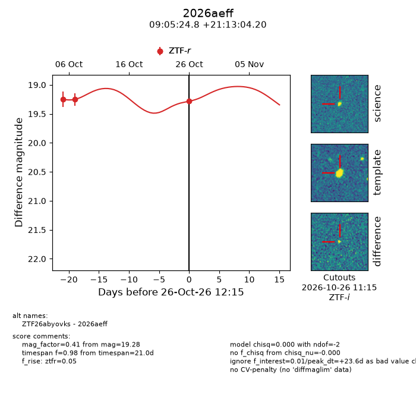
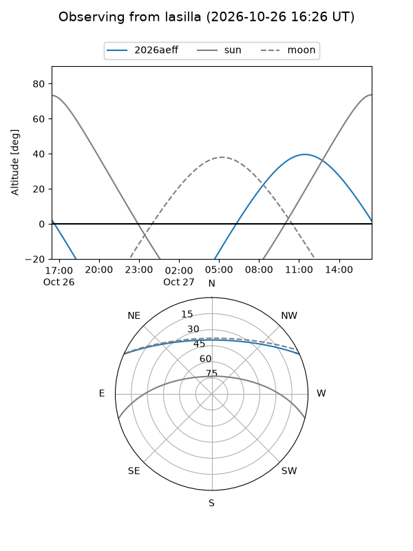
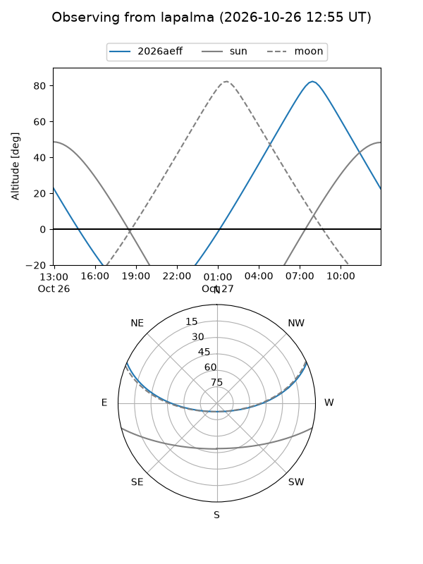
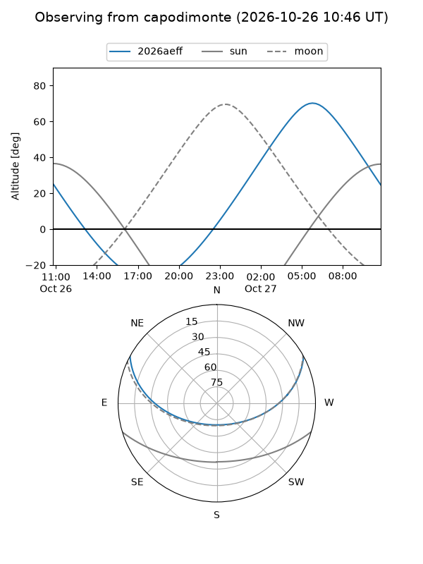
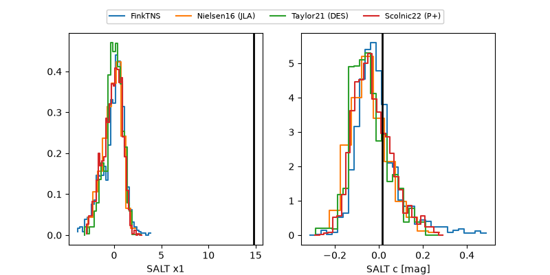

2026aeff
Target 2026aeff at 2026-10-26 12:17
Aliases and brokers:
FINK-ZTF: ztf.fink-portal.org/ZTF26abyovks
Lasair-ZTF: lasair-ztf.lsst.ac.uk/objects/ZTF26abyovks
ALeRCE-ZTF: alerce.online/object/ZTF26abyovks
YSE-PZ: ziggy.ucolick.org/yse/transient_detail/2026aeff
TNS name: wis-tns.org/object/2026aeff
Direct TNS query: direct search
alt names
ZTF26abyovks (ztf,fink_ztf)
2026aeff (tns,yse)
Coordinates:
equatorial (ra, dec) = 136.3535,+21.21783
equatorial (HMS+DMS) = 09:05:24.85,+21:13:04.20
galactic (l, b) = (206.5085,+38.52629)
Flags:
peak dt: +23.6
Photometry:
last ztfr=19.28
3 ztfr detections
Lightcurve

Visibility



Additional plots
